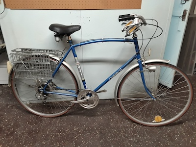
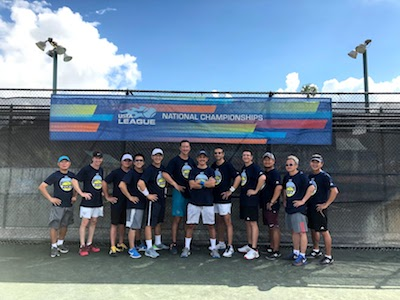

Customer-led products
I like starting with real conversations: what customers are trying to do, where they get stuck, and what would make their work meaningfully better.
I'm Allan Yeung. I interview and listen to customers, prioritize what we should build and why, and keep teams focused on the highest-impact work.
I'm especially interested in customer-led products that help developers spend more time building and designing, and less time on operational toil.
I like starting with real conversations: what customers are trying to do, where they get stuck, and what would make their work meaningfully better.
At Oracle Cloud, I work on builder tools and developer experiences that help developers spend more time building and designing, and less time on operational toil.
I work best with teams that bring a proposal, the tradeoffs behind it, and why they made their recommendation. That creates better prioritization conversations and clearer decisions.

My Berkeley Haas MBA work has focused on finance and real estate, and I serve as Finance Lead for the EWMBA Association.

As a product manager for Oracle Cloud builder tools, I focus on experiences that help developers spend more time building and designing, and less time on operational toil.

I manage a small portfolio of properties that aim to offer a great housing and living experience while operating profitably with healthy margins.

Outside work, I value reading, slow time with family, walks with dogs, and team sports like tennis. Doubles tennis has taught me a lot about trust, adjustment, winning, and losing well.